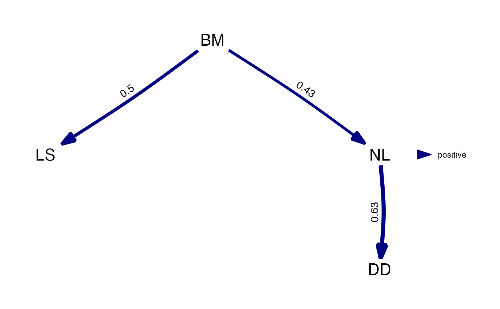

Extract and estimate the best supported model from a phylogenetic path analysis.
Source:R/phylopath.R
best.RdExtract and estimate the best supported model from a phylogenetic path analysis.
Arguments
- phylopath
An object of class
phylopath.- ...
Arguments to pass to phylolm::phylolm and phylolm::phyloglm. Provide
boot = Kparameter to enable bootstrapping, whereKis the number of bootstrap replicates. If you specified other options in the original phylo_path call you don't need to specify them again.
See also
est_DAG() for what the coefficients mean.
Examples
candidates <- define_model_set(
A = NL ~ BM,
B = NL ~ LS,
.common = c(LS ~ BM, DD ~ NL)
)
p <- phylo_path(candidates, rhino, rhino_tree)
best_model <- best(p)
# Print the best model to see coefficients, se and ci:
best_model
#> A fitted causal model: 4 variables, 3 paths.
#> Continuous: BM NL LS DD
#>
#> Paths — standardized regression coefficients
#> path coefficient se
#> BM → LS 0.497 0.089
#> BM → NL 0.430 0.089
#> NL → DD 0.629 0.080
# Plot to show the weighted graph:
plot(best_model)
